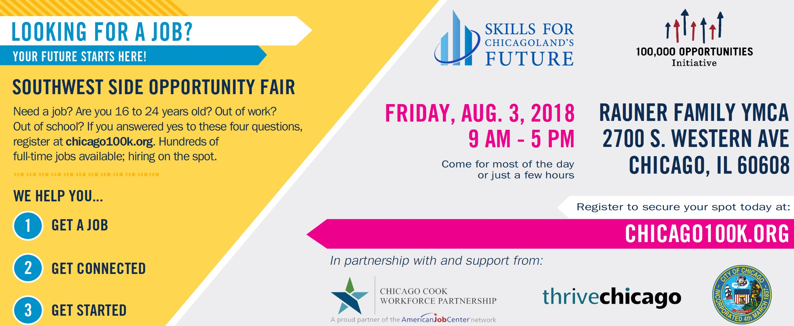
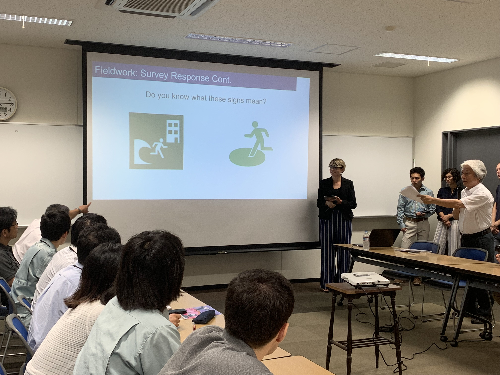

My interest lie in marketing, writing and research.
Below are some internships and projects I completed related to my field.
Skills for Chicgoland's Future

Represented Skills for Chicagoland's Future at Chicago Urban
League's
job fair. Also helped plan and produce the Southwest Side
Opportunity fair, an event for young individuals who were currently
unemployed or underemployed throughout the city of Chicago.
Illinois Tech's Tsunami Preparedness Research Project
Osaka, Japan

I was one of five students chosen to present our
resent research findings to the Osaka Prefecture Government
on June 27, 2019. 21 Illinois Tech students spent the month
of June collecting survey data in Osaka, Japan on foreign
tourists’ disaster preparedness. Our data will help the
government further develop a disaster preparedness app
and
website.
A Radio Show About Nothing
I wrote, recorded, edited and produced my own radio
show on WIIT 88.9fm Chicago, Illiniois Tech's radio station.
Episodes featured new music, musical guests and an episode on
solo female travel. You cam listen to archived episodes
here.